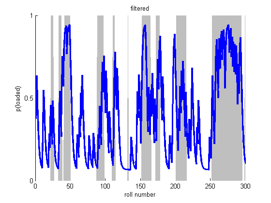
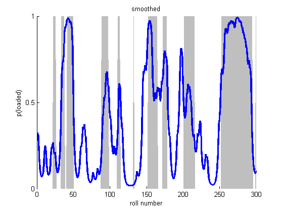
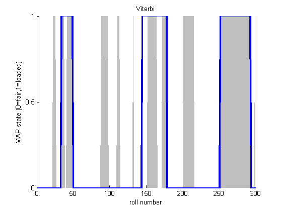

HMMs and the occasionally Dishonest Casino
This is an example from 'Biological Sequence Analysis: Probabilistic Models Proteins and Nucleic Acids' by Durbin, Eddy, Krogh, & Mitchison, (1998) p54.
Contents
Description
Suppose a casino uses a fair die most of the time but occasionally switches to and from a loaded die according to Markovian dynamics. We observe the dice rolls but not the type of die. We can use a Hidden Markov Model to predict which die is being used at any given point in a sequence of rolls. In this example, we know both the transition and emission probabilities.
Specifying the Model
Since we are not learning the parameters, we must specify the observation/emission model, the transition matrix, and the distribution over starting states.
fair = 1; loaded = 2;
Observation Model
We will use a discrete observation model, one discrete distribution per hidden state of which there are two.
setSeed(1); obsModel = [1/6 , 1/6 , 1/6 , 1/6 , 1/6 , 1/6 ; % fair die 1/10, 1/10, 1/10, 1/10, 1/10, 5/10 ]; % loaded die
Transition Matrix
transmat = [0.95 , 0.05;
0.10 , 0.90];
Distribution over Starting States
pi = [0.5, 0.5];
Sample
We now sample a single sequence of 300 dice rolls
len = 300; nsamples = 1; markov.pi = pi; markov.A = transmat; hidden = markovSample(markov, len, nsamples); observed = zeros(1, len); for t=1:len observed(1, t) = sampleDiscrete(obsModel(hidden(t), :)); end
Fit via EM (pretending we don't know the hidden states)
nstates = size(obsModel, 1); modelEM = hmmFit(observed, nstates, 'discrete', ... 'maxIter', 1000, 'verbose', true, 'convTol', 1e-7, 'nRandomRestarts', 3);
********** Random Restart 1 ********** 1 loglik: -544.991 2 loglik: -544.02 3 loglik: -543.937 4 loglik: -543.87 5 loglik: -543.814 6 loglik: -543.767 7 loglik: -543.726 8 loglik: -543.69 9 loglik: -543.659 10 loglik: -543.631 11 loglik: -543.606 12 loglik: -543.584 13 loglik: -543.563 14 loglik: -543.545 15 loglik: -543.528 16 loglik: -543.512 17 loglik: -543.497 18 loglik: -543.483 19 loglik: -543.47 20 loglik: -543.458 21 loglik: -543.447 22 loglik: -543.435 23 loglik: -543.425 24 loglik: -543.415 25 loglik: -543.405 26 loglik: -543.395 27 loglik: -543.386 28 loglik: -543.377 29 loglik: -543.369 30 loglik: -543.361 31 loglik: -543.353 32 loglik: -543.345 33 loglik: -543.337 34 loglik: -543.33 35 loglik: -543.323 36 loglik: -543.316 37 loglik: -543.309 38 loglik: -543.303 39 loglik: -543.296 40 loglik: -543.29 41 loglik: -543.284 42 loglik: -543.278 43 loglik: -543.272 44 loglik: -543.266 45 loglik: -543.261 46 loglik: -543.255 47 loglik: -543.25 48 loglik: -543.244 49 loglik: -543.239 50 loglik: -543.233 51 loglik: -543.227 52 loglik: -543.222 53 loglik: -543.216 54 loglik: -543.21 55 loglik: -543.204 56 loglik: -543.198 57 loglik: -543.191 58 loglik: -543.184 59 loglik: -543.176 60 loglik: -543.168 61 loglik: -543.16 62 loglik: -543.15 63 loglik: -543.14 64 loglik: -543.128 65 loglik: -543.116 66 loglik: -543.101 67 loglik: -543.085 68 loglik: -543.067 69 loglik: -543.046 70 loglik: -543.022 71 loglik: -542.993 72 loglik: -542.96 73 loglik: -542.921 74 loglik: -542.874 75 loglik: -542.819 76 loglik: -542.751 77 loglik: -542.669 78 loglik: -542.569 79 loglik: -542.445 80 loglik: -542.293 81 loglik: -542.106 82 loglik: -541.878 83 loglik: -541.602 84 loglik: -541.277 85 loglik: -540.907 86 loglik: -540.507 87 loglik: -540.098 88 loglik: -539.709 89 loglik: -539.362 90 loglik: -539.07 91 loglik: -538.829 92 loglik: -538.628 93 loglik: -538.457 94 loglik: -538.304 95 loglik: -538.163 96 loglik: -538.032 97 loglik: -537.908 98 loglik: -537.791 99 loglik: -537.68 100 loglik: -537.576 101 loglik: -537.479 102 loglik: -537.388 103 loglik: -537.304 104 loglik: -537.227 105 loglik: -537.156 106 loglik: -537.091 107 loglik: -537.033 108 loglik: -536.981 109 loglik: -536.934 110 loglik: -536.893 111 loglik: -536.858 112 loglik: -536.826 113 loglik: -536.8 114 loglik: -536.777 115 loglik: -536.757 116 loglik: -536.741 117 loglik: -536.727 118 loglik: -536.716 119 loglik: -536.706 120 loglik: -536.699 121 loglik: -536.693 122 loglik: -536.688 123 loglik: -536.683 124 loglik: -536.68 125 loglik: -536.678 126 loglik: -536.676 127 loglik: -536.674 128 loglik: -536.673 129 loglik: -536.672 130 loglik: -536.671 131 loglik: -536.67 132 loglik: -536.67 133 loglik: -536.669 134 loglik: -536.669 135 loglik: -536.669 136 loglik: -536.669 137 loglik: -536.669 138 loglik: -536.668 139 loglik: -536.668 140 loglik: -536.668 141 loglik: -536.668 ********** Random Restart 2 ********** 1 loglik: -581.387 2 loglik: -543.978 3 loglik: -543.878 4 loglik: -543.797 5 loglik: -543.728 6 loglik: -543.668 7 loglik: -543.617 8 loglik: -543.572 9 loglik: -543.533 10 loglik: -543.499 11 loglik: -543.47 12 loglik: -543.443 13 loglik: -543.42 14 loglik: -543.4 15 loglik: -543.382 16 loglik: -543.365 17 loglik: -543.351 18 loglik: -543.338 19 loglik: -543.327 20 loglik: -543.317 21 loglik: -543.307 22 loglik: -543.299 23 loglik: -543.292 24 loglik: -543.285 25 loglik: -543.279 26 loglik: -543.274 27 loglik: -543.269 28 loglik: -543.265 29 loglik: -543.261 30 loglik: -543.257 31 loglik: -543.254 32 loglik: -543.251 33 loglik: -543.249 34 loglik: -543.246 35 loglik: -543.244 36 loglik: -543.242 37 loglik: -543.24 38 loglik: -543.239 39 loglik: -543.237 40 loglik: -543.236 41 loglik: -543.235 42 loglik: -543.233 43 loglik: -543.232 44 loglik: -543.231 45 loglik: -543.231 46 loglik: -543.23 47 loglik: -543.229 48 loglik: -543.229 49 loglik: -543.228 50 loglik: -543.227 51 loglik: -543.227 52 loglik: -543.226 53 loglik: -543.226 54 loglik: -543.226 55 loglik: -543.225 56 loglik: -543.225 57 loglik: -543.225 58 loglik: -543.224 59 loglik: -543.224 60 loglik: -543.224 61 loglik: -543.224 62 loglik: -543.224 63 loglik: -543.223 64 loglik: -543.223 65 loglik: -543.223 66 loglik: -543.223 67 loglik: -543.223 68 loglik: -543.223 69 loglik: -543.223 70 loglik: -543.223 71 loglik: -543.222 72 loglik: -543.222 73 loglik: -543.222 74 loglik: -543.222 75 loglik: -543.222 76 loglik: -543.222 77 loglik: -543.222 78 loglik: -543.222 ********** Random Restart 3 ********** 1 loglik: -612.429 2 loglik: -544.386 3 loglik: -544.229 4 loglik: -544.109 5 loglik: -544.007 6 loglik: -543.921 7 loglik: -543.846 8 loglik: -543.78 9 loglik: -543.723 10 loglik: -543.673 11 loglik: -543.629 12 loglik: -543.59 13 loglik: -543.555 14 loglik: -543.524 15 loglik: -543.496 16 loglik: -543.472 17 loglik: -543.45 18 loglik: -543.43 19 loglik: -543.412 20 loglik: -543.396 21 loglik: -543.381 22 loglik: -543.368 23 loglik: -543.357 24 loglik: -543.346 25 loglik: -543.337 26 loglik: -543.328 27 loglik: -543.32 28 loglik: -543.313 29 loglik: -543.306 30 loglik: -543.301 31 loglik: -543.295 32 loglik: -543.29 33 loglik: -543.286 34 loglik: -543.282 35 loglik: -543.278 36 loglik: -543.275 37 loglik: -543.272 38 loglik: -543.269 39 loglik: -543.266 40 loglik: -543.264 41 loglik: -543.262 42 loglik: -543.26 43 loglik: -543.258 44 loglik: -543.256 45 loglik: -543.255 46 loglik: -543.253 47 loglik: -543.252 48 loglik: -543.25 49 loglik: -543.249 50 loglik: -543.248 51 loglik: -543.247 52 loglik: -543.246 53 loglik: -543.245 54 loglik: -543.244 55 loglik: -543.244 56 loglik: -543.243 57 loglik: -543.242 58 loglik: -543.242 59 loglik: -543.241 60 loglik: -543.24 61 loglik: -543.24 62 loglik: -543.239 63 loglik: -543.239 64 loglik: -543.238 65 loglik: -543.238 66 loglik: -543.237 67 loglik: -543.237 68 loglik: -543.236 69 loglik: -543.236 70 loglik: -543.236 71 loglik: -543.235 72 loglik: -543.235 73 loglik: -543.235 74 loglik: -543.234 75 loglik: -543.234 76 loglik: -543.234 77 loglik: -543.233 78 loglik: -543.233 79 loglik: -543.233 80 loglik: -543.232 81 loglik: -543.232 82 loglik: -543.232 83 loglik: -543.232 84 loglik: -543.231 85 loglik: -543.231 86 loglik: -543.231 87 loglik: -543.231 88 loglik: -543.231 89 loglik: -543.23 90 loglik: -543.23 91 loglik: -543.23 92 loglik: -543.23 93 loglik: -543.23 94 loglik: -543.229 95 loglik: -543.229 96 loglik: -543.229 97 loglik: -543.229 98 loglik: -543.229 99 loglik: -543.229 100 loglik: -543.228 101 loglik: -543.228 102 loglik: -543.228 103 loglik: -543.228 104 loglik: -543.228 105 loglik: -543.228 106 loglik: -543.228 107 loglik: -543.227 108 loglik: -543.227 109 loglik: -543.227 110 loglik: -543.227 111 loglik: -543.227 112 loglik: -543.227 113 loglik: -543.227 114 loglik: -543.227 115 loglik: -543.227 116 loglik: -543.226 117 loglik: -543.226 118 loglik: -543.226 119 loglik: -543.226 120 loglik: -543.226 121 loglik: -543.226 122 loglik: -543.226 123 loglik: -543.226 124 loglik: -543.226 125 loglik: -543.226 126 loglik: -543.225 127 loglik: -543.225 128 loglik: -543.225 129 loglik: -543.225 130 loglik: -543.225 131 loglik: -543.225 132 loglik: -543.225 133 loglik: -543.225 134 loglik: -543.225 135 loglik: -543.225 136 loglik: -543.225 137 loglik: -543.225 138 loglik: -543.225 139 loglik: -543.224 140 loglik: -543.224 141 loglik: -543.224 142 loglik: -543.224 143 loglik: -543.224 144 loglik: -543.224 145 loglik: -543.224 146 loglik: -543.224 147 loglik: -543.224 148 loglik: -543.224 149 loglik: -543.224 150 loglik: -543.224 151 loglik: -543.224
Viterbi Path
We can now try and recover the most likely sequence of hidden states, the Viterbi path.
model.nObsStates = size(obsModel, 2);
model.emission = tabularCpdCreate(obsModel);
model.nstates = nstates;
model.pi = pi;
model.A = transmat;
model.type = 'discrete';
viterbiPath = hmmMap(model, observed);
Do the same thing with a dgm
dgm = hmm2Dgm(model, len);
viterbiPathDGM = dgmMap(dgm, 'localev', observed);
assert(isequal(viterbiPath, viterbiPathDGM));
Sequence of Most Likely States (Max Marginals)
[gamma, loglik, alpha, beta, localEvidence] = hmmInferNodes(model, observed); maxmargF = maxidx(alpha); % filtered (forwards pass only) maxmarg = maxidx(gamma); % smoothed (forwards backwards)
Posterior Samples
We can also sample from the posterior, fowards filtering, backwards sampling, and compare the mode of these samples to the predictions above.
postSamp = mode(hmmSamplePost(model, observed, 100), 2)';
We now display the rolls, the corresponding die used and the Viterbi prediction.
die = hidden;
rolls = observed;
dielabel = repmat('F',size(die));
dielabel(die == 2) = 'L';
vitlabel = repmat('F',size(viterbiPath));
vitlabel(viterbiPath == 2) = 'L';
maxmarglabel = repmat('F',size(maxmarg));
maxmarglabel(maxmarg == 2) = 'L';
postsamplabel = repmat('F',size(postSamp));
postsamplabel(postSamp == 2) = 'L';
rollLabel = num2str(rolls);
rollLabel(rollLabel == ' ') = [];
for i=1:60:300
fprintf('Rolls:\t %s\n',rollLabel(i:i+59));
fprintf('Die:\t %s\n',dielabel(i:i+59));
fprintf('Viterbi: %s\n',vitlabel(i:i+59));
fprintf('MaxMarg: %s\n',maxmarglabel(i:i+59));
fprintf('PostSamp: %s\n\n',postsamplabel(i:i+59));
end
Rolls: 565413324266212352263632651444153661466466661666615522435356 Die: FFFFFFFFFFFFFFFFFFFFFLLLLLFFFFFFLLLLLLFFLLLLLLLLLLFFFFFFFFFF Viterbi: FFFFFFFFFFFFFFFFFFFFFFFFFFFFFFFFFLLLLLLLLLLLLLLLLFFFFFFFFFFF MaxMarg: FFFFFFFFFFFFFFFFFFFFFFFFFFFFFFFFFLLLLLLLLLLLLLLLLFFFFFFFFFFF PostSamp: FFFFFFFFFFFFFFFFFFFFFFFFFFFFFFFFFLLLLLLLLLLLLLLLLFFFFFFFFFFF Rolls: 216464644131151365523462225516363166464465153622152666536354 Die: FFFFFFFFFFFFFFFFFFFFFFFFFFFLLLLLLLLLLLFFFFFFFFFFFLLLLLFFFFFF Viterbi: FFFFFFFFFFFFFFFFFFFFFFFFFFFFFFFFFFFFFFFFFFFFFFFFFFFFFFFFFFFF MaxMarg: FFFFFFFFFFFFFFFFFFFFFFFFFFFFFFFLLLLLLLFFFFFFFFFFFFFLLLFFFFFF PostSamp: FFFFFFFFFFFFFFFFFFFFFFFFFFFFFFFLLLLLLLFFFFFFFFFFFFFLLLFFFFFF Rolls: 111131153535535361514141665611266666653226236262426456616614 Die: FFFFFFFFFFFLLFFFFFFFFFFFFFFFFFFLLLLLLLLLLLLLLFFFFFFLLLLLLLFF Viterbi: FFFFFFFFFFFFFFFFFFFFFFFFLLLLLLLLLLLLLLLLLLLLLLLLLLLLLLLLLLFF MaxMarg: FFFFFFFFFFFFFFFFFFFFFFFFLLLLLLLLLLLLLLLLLLLLLLLLLLLLLLLLLLFF PostSamp: FFFFFFFFFFFFFFFFFFFFFFFFLLLLLLLLLLLLLLLFFFFFLFLFFLLLLLLLLLLF Rolls: 264534214246323666621342656263641365424654664111336265545313 Die: FFFFFFFFFFFFFFFFFFFFLLLLLLLLLLLLLLLLFFFFFFFFFFFFFFFFFFFFFFFF Viterbi: FFFFFFFFFFFFFFFFFFFFFFFFFFFFFFFFFFFFFFFFFFFFFFFFFFFFFFFFFFFF MaxMarg: FFFFFFFFFFFFFFLLLLLLFFFFLLLLLLLFFFFFFFFFFFFFFFFFFFFFFFFFFFFF PostSamp: FFFFFFFFFFFFFFLLLLLLFFFFLLLLLLLFFFFFFFFFFFFFFFFFFFFFFFFFFFFF Rolls: 353311526236652466621661665661566666366462636564364663321312 Die: FFFFFFFFFFFLLLLLLLLLLLLLLLLLLLLLLLLLLLLLLLLLLLLLLLLLLLLFFFLL Viterbi: FFFFFFFFFFFLLLLLLLLLLLLLLLLLLLLLLLLLLLLLLLLLLLLLLLLLLFFFFFFF MaxMarg: FFFFFFFFFFFLLLLLLLLLLLLLLLLLLLLLLLLLLLLLLLLLLLLLLLLLLFFFFFFF PostSamp: FFFFFFFFFFLLLLLLLLLLLLLLLLLLLLLLLLLLLLLLLLLLLLLLLLLLLFFFFFFF
viterbiErr = sum(viterbiPath ~= die); maxMargSErr = sum(maxmarg ~= die); maxMargFErr = sum(maxmargF~=die); postSampErr = sum(postSamp ~= die); fprintf('\nNumber of Errors\n'); fprintf('Viterbi:\t\t\t\t%d/%d\n',viterbiErr,300); fprintf('Max Marginal Smoothed: %d/%d\n',maxMargSErr,300); fprintf('Max Marginal Filtered: %d/%d\n',maxMargFErr,300); fprintf('Mode Posterior Samples: %d/%d\n',postSampErr,300);
Number of Errors Viterbi: 60/300 Max Marginal Smoothed: 49/300 Max Marginal Filtered: 71/300 Mode Posterior Samples: 53/300
Here we plot the probabilities and shade in grey the portions of the die sequence where a loaded die was actually used.
figure; hold on; % fair=1, loaded=2. So die-1=0 for fair, so gray=loaded area(die-1,'FaceColor',0.75*ones(1,3),'EdgeColor',ones(1,3)); plot(alpha(loaded,:),'LineWidth',2.5); xlabel('roll number'); ylabel('p(loaded)'); set(gca,'YTick',0:0.5:1); title(sprintf('filtered')); printPmtkFigure hmmCasinoFiltered figure; hold on; area(die-1,'FaceColor',0.75*ones(1,3),'EdgeColor',ones(1,3)); plot(gamma(loaded,:),'LineWidth',2.5); xlabel('roll number'); ylabel('p(loaded)'); set(gca,'YTick',0:0.5:1); title(sprintf('smoothed')); printPmtkFigure 'hmmCasinoSmoothed' figure; hold on; area(die-1,'FaceColor',0.75*ones(1,3),'EdgeColor',ones(1,3)); plot(viterbiPath-1, 'linewidth', 2.5); xlabel('roll number'); ylabel('MAP state (0=fair,1=loaded)'); set(gca,'YTick',0:0.5:1); title(sprintf('Viterbi')); printPmtkFigure hmmCasinoViterbi  